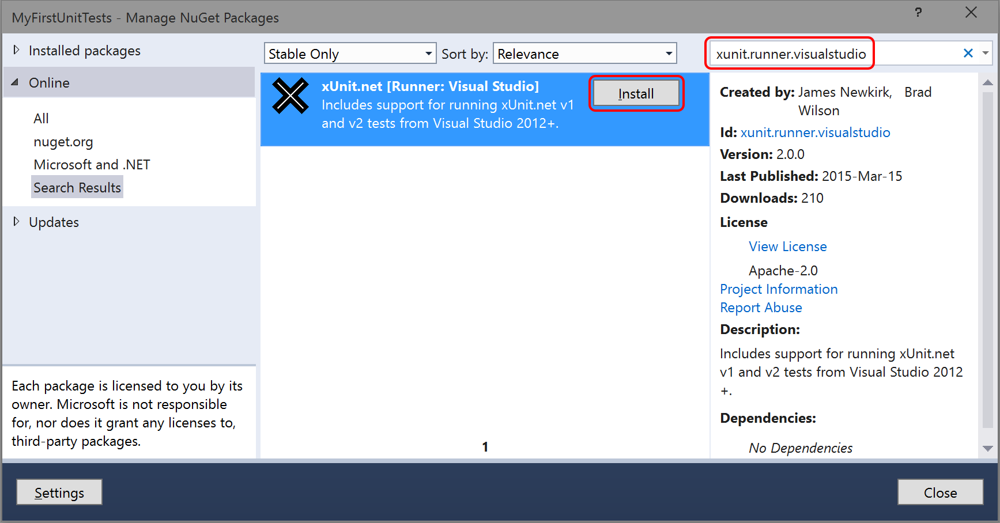
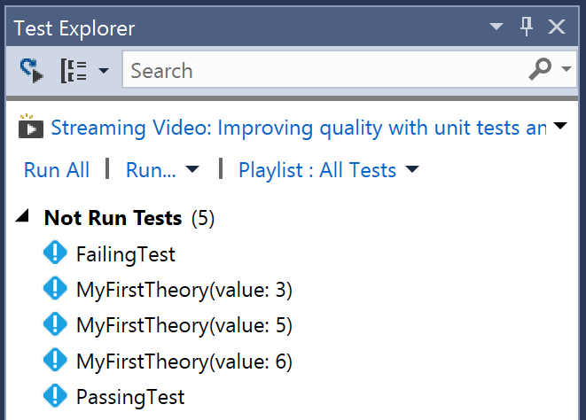
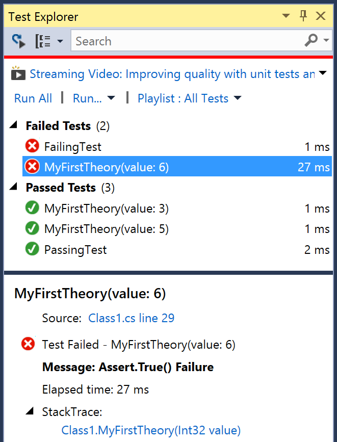

In this article, we will demonstrate getting started with xUnit.net and .NET Core, showing you how to write and run your first set of unit tests.
Note: The examples were done with xUnit.net v2.3 Beta 4, .NET Core SDK 2.0, and .NET Core 2.0. The version numbers, paths, and generated templates may differ for you, depending on which version you're using. .NET Core 1.x is also supported.
As of this writing, the .NET Core SDK is available for
download for Windows,
Linux, and OS X. Once you've downloaded and installed the SDK, open a fresh
command prompt of your choice (CMD, PowerShell, Bash, etc.) and make sure
that you can access the CLI by typing dotnet --version. You
should be rewarded with a single line, describing the version of the
.NET Core SDK you have installed:
$ dotnet --version
2.0.0
Note: the first time you run the dotnet command, it may
perform some post-installation steps. Once these one-time actions are done,
it will execute your command.
An xUnit.net test project for .NET Core, just like other xUnit.net test projects for .NET, starts with a class library. From the command line, create a folder for your test project, change into it, and then create the project:
$ mkdir MyFirstUnitTests $ cd MyFirstUnitTests $ dotnet new classlib Content generation time: 23.3746 ms The template "Class library" created successfully.
The result of this project template creates a .NET Standard class library. We
actually want a .NET Core class library (since we're writing .NET Core tests),
so open the generated .csproj file and edit it so that it looks
like this:
We've made two important changes here:
netcoreapp2.0, which means
that our tests will use .NET Core 2.0.x (whatever is the latest version
installed on our machine);
xunit, as well as a new
.NET CLI Tool reference to dotnet-xunit. The former is the
unit testing framework, and the latter is the command line tooling that
allows you to run the unit tests.
Now let's verify that everything is working:
$ dotnet restore Restoring packages for C:\...\MyFirstUnitTests\MyFirstUnitTests.csproj... Restore completed in 48.87 ms for C:\...\MyFirstUnitTests\MyFirstUnitTests.csproj. Generating MSBuild file C:\...\MyFirstUnitTests\obj\MyFirstUnitTests.csproj.nuget.g.props. Generating MSBuild file C:\...\MyFirstUnitTests\obj\MyFirstUnitTests.csproj.nuget.g.targets. Restore completed in 217.08 ms for C:\...\MyFirstUnitTests\MyFirstUnitTests.csproj. $ dotnet xunit Detecting target frameworks in MyFirstUnitTests.csproj... Building for framework netcoreapp2.0... MyFirstUnitTests -> C:\...\MyFirstUnitTests\bin\Debug\netcoreapp2.0\MyFirstUnitTests.dll Running .NET Core tests for framework netcoreapp2.0... xUnit.net Console Runner (64-bit .NET Core 4.6.00001.0) Discovering: MyFirstUnitTests Discovered: MyFirstUnitTests === TEST EXECUTION SUMMARY === MyFirstUnitTests.dll Total: 0
Excellent! There were no unit tests to run, because we didn't write any yet. Let's do that now.
When you created the project, the project template automatically created a file
named Class1.cs. Using your favorite text editor, open this file
and add a couple tests:
Now let's go run the tests again and see what happens:
$ dotnet xunit Detecting target frameworks in MyFirstUnitTests.csproj... Building for framework netcoreapp2.0... MyFirstUnitTests -> C:\...\MyFirstUnitTests\bin\Debug\netcoreapp2.0\MyFirstUnitTests.dll Running .NET Core tests for framework netcoreapp2.0... xUnit.net Console Runner (64-bit .NET Core 4.6.00001.0) Discovering: MyFirstUnitTests Discovered: MyFirstUnitTests Starting: MyFirstUnitTests MyFirstUnitTests.Class1.FailingTest [FAIL] Assert.Equal() Failure Expected: 5 Actual: 4 Stack Trace: C:\...\MyFirstUnitTests\Class1.cs(16,0): at MyFirstUnitTests.Class1.FailingTest() Finished: MyFirstUnitTests === TEST EXECUTION SUMMARY === MyFirstUnitTests Total: 2, Errors: 0, Failed: 1, Skipped: 0, Time: 0.132s
Note: We didn't run dotnet restore this time. You only need to run that
command when you have changed something inside the .csproj file, like
package references.
The .NET Core CLI test runner has several command line options, which include options for
parallelization, test filtering, and result reporting. To learn more about the console
runner options, run dotnet xunit --help.
Now that we've gotten your first unit tests to run, let's introduce one more way to write tests: using theories.
You may have wondered why your first unit tests use an attribute named
[Fact] rather than one with a more traditional name like Test.
xUnit.net includes support for two different major types of unit tests:
facts and theories. When describing the difference between facts and theories,
we like to say:
Facts are tests which are always true. They test invariant conditions.
Theories are tests which are only true for a particular set of data.
A good example of this testing numeric algorithms. Let's say you want to test an algorithm which determines whether a number is odd or not. If you're writing the positive-side tests (odd numbers), then feeding even numbers into the test would cause it fail, and not because the test or algorithm is wrong.
Let's add a theory to our existing facts (including a bit of bad data, so we can see it fail):
{% highlight C# %} [Theory] [InlineData(3)] [InlineData(5)] [InlineData(6)] public void MyFirstTheory(int value) { Assert.True(IsOdd(value)); } bool IsOdd(int value) { return value % 2 == 1; } {% endhighlight %}This time when we compile and run our tests, we see a second failure, for our theory that was given 6:
xUnit.net Console Runner (64-bit .NET Core 4.6.00001.0)
Discovering: MyFirstUnitTests
Discovered: MyFirstUnitTests
Starting: MyFirstUnitTests
MyFirstUnitTests.Class1.MyFirstTheory(value: 6) [FAIL]
Assert.True() Failure
Expected: True
Actual: False
Stack Trace:
C:\...\MyFirstUnitTests\Class1.cs(30,0): at MyFirstUnitTests.Class1.MyFirstTheory(Int32 value)
MyFirstUnitTests.Class1.FailingTest [FAIL]
Assert.Equal() Failure
Expected: 5
Actual: 4
Stack Trace:
C:\...\MyFirstUnitTests\Class1.cs(16,0): at MyFirstUnitTests.Class1.FailingTest()
Finished: MyFirstUnitTests
=== TEST EXECUTION SUMMARY ===
MyFirstUnitTests Total: 5, Errors: 0, Failed: 2, Skipped: 0, Time: 0.146s
Although we've only written 3 test methods, the test runner actually ran 5 tests; that's because each theory with its data set is a separate test. Note also that the runner tells you exactly which set of data failed, because it includes the parameter values in the name of the test.
Sometimes, you want to write tests and ensure they run against several target
application platforms. The xUnit.net test runner that we've been using supports
.NET Core 1.0 or later, as well as Desktop .NET 4.5.2 or later. With a single
test project, we can have our tests run against multiple target frameworks.
Open the .csproj file and change this:
To this:
{% highlight xml %}
Note that in addition to adding a new target framework, we also renamed the
element from <TargetFramework> (singular) to
<TargetFrameworks>(plural).
Since we changed the .csproj file, we need to remember to re-run
dotnet restore before trying to run our unit tests. Now when
we run the tests, you can see that it runs both target frameworks, one after
another:
$ dotnet restore [...] $ dotnet xunit Detecting target frameworks in MyFirstUnitTests.csproj... Building for framework net452... MyFirstUnitTests -> C:\...\MyFirstUnitTests\bin\Debug\net452\MyFirstUnitTests.dll Running desktop CLR tests for framework net452... xUnit.net Console Runner (64-bit Desktop .NET 4.0.30319.42000) Discovering: MyFirstUnitTests Discovered: MyFirstUnitTests Starting: MyFirstUnitTests MyFirstUnitTests.Class1.MyFirstTheory(value: 6) [FAIL] Assert.True() Failure Expected: True Actual: False Stack Trace: C:\...\MyFirstUnitTests\Class1.cs(30,0): at MyFirstUnitTests.Class1.MyFirstTheory(Int32 value) MyFirstUnitTests.Class1.FailingTest [FAIL] Assert.Equal() Failure Expected: 5 Actual: 4 Stack Trace: C:\...\MyFirstUnitTests\Class1.cs(16,0): at MyFirstUnitTests.Class1.FailingTest() Finished: MyFirstUnitTests === TEST EXECUTION SUMMARY === MyFirstUnitTests Total: 5, Errors: 0, Failed: 2, Skipped: 0, Time: 0.167s Building for framework netcoreapp2.0... MyFirstUnitTests -> C:\...\MyFirstUnitTests\bin\Debug\netcoreapp2.0\MyFirstUnitTests.dll Running .NET Core tests for framework netcoreapp2.0... xUnit.net Console Runner (64-bit .NET Core 4.6.00001.0) Discovering: MyFirstUnitTests Discovered: MyFirstUnitTests Starting: MyFirstUnitTests MyFirstUnitTests.Class1.MyFirstTheory(value: 6) [FAIL] Assert.True() Failure Expected: True Actual: False Stack Trace: C:\...\MyFirstUnitTests\Class1.cs(30,0): at MyFirstUnitTests.Class1.MyFirstTheory(Int32 value) MyFirstUnitTests.Class1.FailingTest [FAIL] Assert.Equal() Failure Expected: 5 Actual: 4 Stack Trace: C:\...\MyFirstUnitTests\Class1.cs(16,0): at MyFirstUnitTests.Class1.FailingTest() Finished: MyFirstUnitTests === TEST EXECUTION SUMMARY === MyFirstUnitTests Total: 5, Errors: 0, Failed: 2, Skipped: 0, Time: 0.146s
If you're having problems discovering or running tests, you may be a victim
of a corrupted runner cache inside Visual Studio. To clear this cache, shut down all instances
of Visual Studio, then delete the folder %TEMP%\VisualStudioTestExplorerExtensions.
Also make sure your project is only linked against a single version of the Visual Studio runner
NuGet package (xunit.runner.visualstudio).
If you have Visual Studio Community (or a paid-for version of Visual Studio), you can run your xUnit.net tests within Visual Studio's built-in test runner (named Test Explorer). Unfortunately, this does not include Express editions of Visual Studio (you should upgrade to the free Community Edition instead).
Right click on the project in Solution Explorer and choose Manage NuGet Packages.
You will need to install two packages:
xunit.runner.visualstudio (version 2.3.0-beta4-build3742 or later)Microsoft.NET.Test.Sdk (version 15.0.0 or later)Here is an example of the NuGet window:

Make sure Test Explorer is visible (go to Test > Windows > Test Explorer). Every
time you build your project, the runner will discover unit tests in your project. After a moment of
discovery, you should see the list of discovered tests:

Click the Run All link in the Test Explorer window, and you should see the results update
in the Test Explorer window as the tests are run:

You can click on a failed test to see the failure message, and the stack trace. You can click on the stack trace lines to take you directly to the failing line of code.
When running tests from the command line, the following return codes are used by the runner:
| Return code | Meaning |
|---|---|
0 |
The tests ran successfully. |
1 |
One or more of the tests failed. |
2 |
The help page was shown, either because it was requested, or because the user did not provide any command line arguments. |
3 |
There was a problem with one of the command line options passed to the runner. |
4 |
There was a problem loading one or more of the test assemblies (for example, if a 64-bit only assembly is run with the 32-bit test runner). |